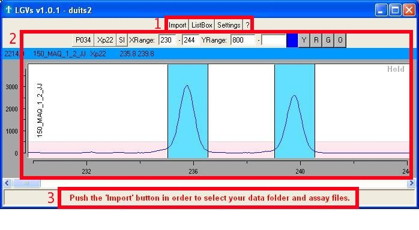
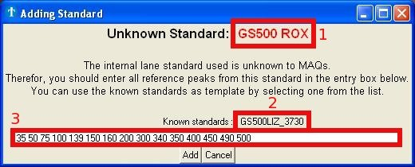
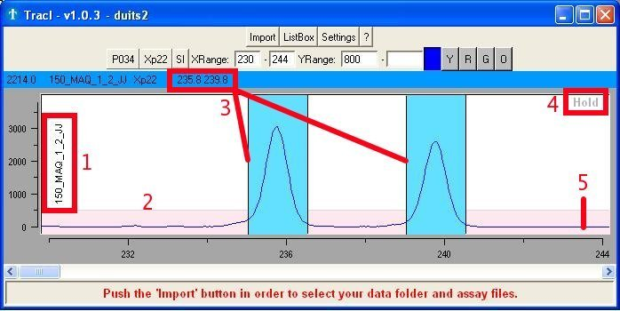
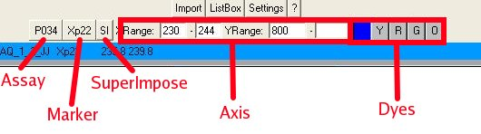
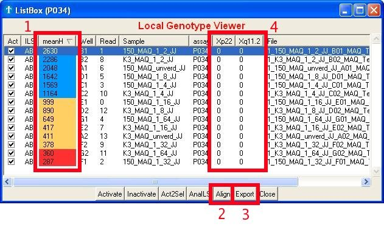
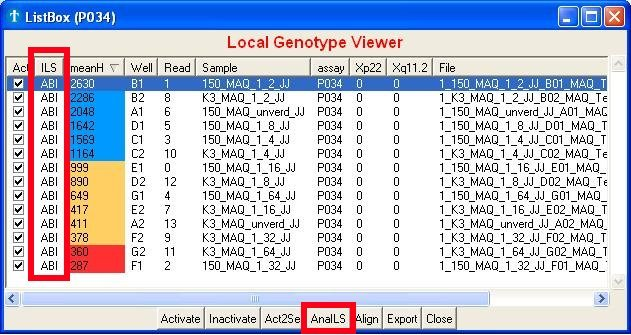
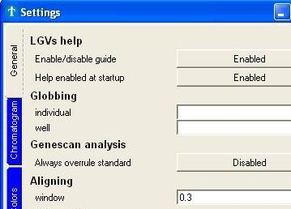
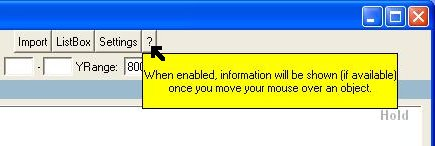

TracI Manual v1.0
TracI is freeware and thereby
free of charge. The only limitations are on the level of its code, not on
its 'normal' use. You can download the package from the site of
the VIB Genetics Service Facility at http://www.vibgeneticservicefacility.be/LGV.htm.
The application works right away after decompression, so you do not
have to install anything. This should exclude any permission issues of
the operating system regarding the installation of software on your
computer. The application works
anywhere so you can put the unpacked folder anywhere you like.
Important:
- By using the application you agree to the included license agreement, which mainly
grants the use of the application without charge but limits the user in
selling or changing the application itself (or any modification of it).
- We are still working to improve the application so it's best to check back
for updates once in a while. By default, the application will do this check
automatically for you. It will not automatically update however,
that's still something you should do manually.
- It's a cross-platform application and thereby also available
for
linux.
2.1 Background
*Sigh*
2.2 The software
The 'Main' window (Fig. 1a) serves as a platform to all its other
features and
consists of 3 major parts:
- Buttons to open the other
interesting
windows
- Import: selection of the
folder containing
the raw data files and the assay description file.
- ListBox: selection of
reads you want to
view or set as reference.
- Settings: mostly
changing visual
appearance of the application
- '?' or Help:
enables/disables help
through the use of text
balloons (a text balloon will appear if you hold the mouse pointer over
an object)
- One or more graphs showing the raw chromatogram
data
- The 'comment bar' showing
comments/help/notes from the application itself.

Fig. 1a : The different parts
found in the 'Main' window
Remark:
- The application holds a guide
which will try to help you by giving hints of what you should do next.
This guide is by default on, but can be switched off in the Settings.
3.1 Selecting the data folder and the
assay description file
The import window (Fig. 3a) mainly serves as a platform to select the
folder
containing your raw data files and the assay description files.
Fig.
3a : Importing data and assay files
- The upper part of the window expects you to select the directory
containing your raw data (.fsa files). The application will, by default, select
all
the reads found in this directory. You can deselect
files afterwards, but it's better to divide the different
projects over different folders before you start.
- In the lower part you select the appropriate assay description
file (.txt file). This file holds the information of every marker
used in the assay (color and length). You can create such assay file
yourself (use the assay in the demo folder as template).
3.2 Unknown internal lane standard
If you open an .fsa file for the first time, the application will put the
analyzed internal lane standard in a .extra file with the same file name.
If, however, the internal lane standard used is unknown to the application,
it will ask you to enter the sizes of every peak within this
standard (Fig. 3b).

Fig.
3b : Picture of the window for adding new internal lane standards.
For your ease, you can use another known internal lane standard as
template
(Fig. 3b - square 2). The lengths associated with this new internal
lane
standard are saved, so you only have to do this once for every new
internal lane standard.
Caution:
- Entering wrong sizes will give bad results as amplicons will have
incorrect lengths !
4.1 Content
This region of the main window (Fig. 4a) holds and shows the :
- Label of the read
- Area (pink) with fixed height for getting a quick and general
idea about the intensity (without having to look at the Y-axis)
- Scored alleles
- 'Hold' button to fix a certain graph with a single read
- Raw chromatogram
data

Fig. 4a : Scored genotype
Remarks:
- Many properties (color, font, ...) of the objects shown
in the chromatogram can be altered using the Settings.
- Ranges that are not fully covered by the internal lane standard
are shown in the same color as the 'low height marker'.
- X and Y ranges can also be changed using the arrows (up/down)
- All graphs are
linked with each other. If you change the read in one window, the
others will follow. This linking can be forced by clicking with the
right
mouse button on the chromatogram graph.
4.2 Other functions
Next to just looking at the default range, you can also (Fig. 4b):
- Select another assay (if the assay description file contains more
than one)
- Quickly zoom to a certain marker area
- Super impose the currently activated reads
- Change
the X (base length) and Y (peak intensities) axis
- View the
intensities of other dyes

Fig. 4b : The different chromatogram
functions
4.3 Setting the genotypes
Once you selected and opened the data and assay file(s) you can start
scoring (setting genotypes). By default however, the complete range is
shown. So before you can start, you should first select the marker you
want analyze using the 'Zoom2' button. Scoring an allele is very easy
and is done by using the LEFT mouse button, while holding the CONTROL
key. Deleting an allele is done by LEFT clicking again on the existing
bin, while holding the CONTROL key. Clearing the genotype is done by
using the RIGHT mouse button, while holding the CONTROL key.
Remark:
- At this moment, genotypes exists out of maximum 2 alleles.
The ListBox window serves as an overview of your experiment as well as
a platform to in/activate reads or export results. The most important
features are:
- The overall quality of a read. Its
value represents the mean of all highest peaks found within each marker
area. Colors are given in respect to the height of the 'low height
marker', which value can be found and set in the 'Settings'.
- The possibility to group/align alleles of the same size. It will
be a lot easier to change these grouped sizes into alleles afterwards
(in excel for instance).
- To export your data
- To view the already scored genotypes

Fig. 5c : Browsing the data
Remarks:
- The 'meanH' value (color) found in the Listbox differs from the
value (color) found within the chromatogram, because the one in the
ListBox holds the average of ALL markers whereas the one in the
chromatogram only takes into account the currently selected marker.
- The sliding window used to group/align the alleles can be
adjusted in the
Settings.
- Sizes are currently not just 'rounded' in order to avoid grouping
of sizes 110.51 and 111.49.
- You can also copy the content of the ListBox to the clipboard, by
first selecting the data from within the ListBox after which you push
the CONTROL-C (copy) keys.
- Sorting can be done by clicking the column header.
5.1 Browsing reads
The application frequently uses the term 'active read'. Active reads are
generally speaking, the reads of interest. Only those will be shown or
can be browsed through in the graphs. The first time you start with an
assay, all reads will be active by default. In-Activation is done by
clicking on the checkboxes (Fig. 5a, square 2) or the 'Inactivate' or
'Activate' buttons
(Fig. 5a, square 1). Both of these buttons will set the selected reads
in- or active. Selecting reads can be done using the SHIFT (subsequent
selection) or CONTROL (individual selection) keys. The button 'Act2Sel'
(Active to Select) will select the
reads which are
currently active. Which is very handy when you want to alter the
current set
of active reads without first selecting the ones that already are.
Fig. 5a : In-Activating reads
Important :
- All graphs are
linked with each other. If you change the read in one window, the
others will follow. This linking can be forced by clicking with the
right mouse button on the read in the ListBox.
5.2 The internal lane standard
Most of the time you should not worry about the analysis of the
internal lane standard or ILS, which is finding the correlation between
retention time and base size. Only if sizes seem to be at the wrong
positions (I have seen shifts of over 10000 bases), you should check
whether the analysis of the ILS is correct. These shifts usually arise
with overloaded samples (too much DNA or PCR cycles).
The easiest way to fix any
issues you will have regarding this, is by just opening the data folder
as you are used to. The application will use the ILS analysis from ABI whenever
available and analyze the ILS itself if absent. You can check which
application did the analysis in the ILS column. If for some reason the
ABI application failed in the analysis of the ILS, you can override the
ILS analysis by ABI by using the AnaILS button.

Fig. 5b : The internal lane
standard or ILS
Remarks:
- You can always manually check the ILS yourself by enabling the orange dye
- Editing the ILS analysis is impossible (yet)
Holds the interface for altering many settings. Most of the
settings will change the look of the application, which makes for nice
pictures if you want to use those in any kind of presentation or
document.

Fig. 6a : Part of the Settings window
Important:
- If you have questions about a certain setting or you are not sure
what
it does, turn on the help feature and move your mouse over the setting.
Most likely, it will give a brief description.
7.1 Help features
The application holds 2 types of help: the 'guide' and 'help balloons'.
- The
guide will try to determine what you should do next and it will notify
you through flashing objects and comment in the 'Comment
bar'.
- The help
balloon will show more information (if available) about the object
currently under the mouse pointer.

Fig. 7a : Help through the
use of text balloons
Remark:
- Both types can be dis-enabled in the Settings.
7.2 Globbing
By default, the application will take the well and label values from
within the
fsa files. If you are not happy with these data values (for whatever
reason), you can use the globbing feature. This globbing feature uses a
given pattern and tries to match it on the fsa file names. Thus, by
changing the file name and having the correct pattern, you can have any
well and label value shown. The globbing is done using the
regular
expression syntax of Tcl/Tk.
Examples for file '1234_sample-1_bla.fsa':
_([^-]+) => sample
_([^.]+)_ => sample-1
([^_]+) => 1234
_[^_]+_([^.]+) =>bla
Question: Can I create an assay description file myself ?
-You can create assay description files yourself. It's easiest to
use the assay description file in the demo folder as template.
Question: It seems I cannot open such an assay description file ?
-The assay description file should be a text file in which the
columns are seperated by tabs (tab delimited txt file).
Question: How do I use such an assay description file ?
-Assay files can be imported in the application together with
the data. Start the application and press the 'Import'
button.
Question: Peaks are not aligning with the bins ?
- The newer versions let the user change the bins width and
position. The latest version can be download from:
http://www.vibgeneticservicefacility.be/tech/maq.php
The following section in the manual explains how to alter the bins:
http://www.vibgeneticservicefacility.be/tech/TracI-Manual.html#graph-editbin
Question: My assay contains more than 1 marker. How do I select the other ones ?
- The square which shows the active assay is actually a button.
Clicking on it will give you the possibility to switch
between the different assay descriptions contained within the
assay description file.